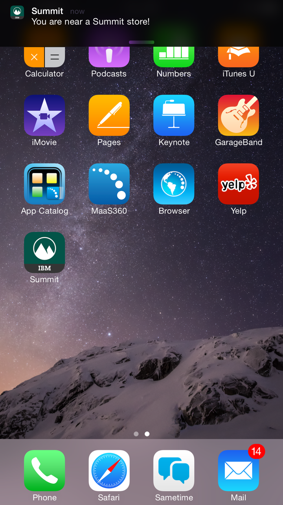

Start
Start App
App Middleware
Start
App
Middleware
Middleware
Start
App
Middleware
This guide will help you get started developing your own application with Summit. Use the contents box below to skip to section of the guide you are most interested in.
| IBM Mobile First Platform |
|---|
|
| iOS | Android | Hybrid |
|---|---|---|
|
|
|
The Summit application was designed to easily demonstrate different features. To assist this, "Demo mode" can be enabled by navigating to the Profile tab and flipping the switch. This "Demo mode" simulates the user entering a Summit store and receiving the related notification. Once enabled, this forces the application to display an Xtify banner notification immediately after minimizing the application (pressing the home button). To show this notification again, reopen the Summit application, ensure "Demo mode" is set (do not need to reset), and minimize the application once again. This can be done as many times as desired while "Demo mode" is set.
This allows the individual demonstrating the application to prompt the "You are near a Summit store!" Xtify notification (shown above) that would usually only be accessible upon exiting and reentering the 70 meter range of beacons. Turning off "Demo mode" will halt these notifications from being force-shown when the application enters the background.
We used Estimote beacons in our app to determine proximity to a store department. The ideal setup would be that each department or region in a store has a beacon associated with it and this data is accessible from a database and as the user is navigating through the store, their device is receiving custom notifications and sales alerts based on their location and proximity to the specific department. In our demo situation we created an algorithm that allows any salesman to use their Estimote Beacons out of the box.
Our algorithm works as follows: as the mobile device encounters new beacons, the algorithm checks to see if the beacon is assigned a department from our full list of departments in the current store. If no department is assigned to the beacon, then the algorithm assigns the next unassigned department. These settings do not currently persist between installs of the application to enable an ease of use in the event that the salesman does not have the same beacons between app instances.
Note that this nonpersistant state means that for the first run of the app if the user walked first to the "dark blue" beacon and this was assigned the "Winter Sports" department, it is not guarenteed that the next time the user runs the app the "dark blue" beacon will be "Winter Sports", it could be the case that the "dark blue" beacon is now the "Mens Boots" department.
It also should be noted that in the real world, you would not be using an algorithm that dynamically and randomly assigns beacons to a department. Instead, beacons would probably be hard coded to a department so that everytime the app is open and closed, the same beacons are the same departments. Since this is a demo and we can't know all the beacon ids that people will be using, we chose to instead implement Summit's beacon algorithm to be dymnamic in assigning beacons to departments so any estimote beacons would work with Summit.
1.Before opening the app, make sure that you have bluetooth turned on.
2. Grab all the beacon's you will be using for the demo and line them all up next to each other. For best results we recommend a minimum of 2 and a maximum of 3 beacons (it will work with more however).
3. Hold your phone within 0-1 feet of the beacons and open the Summit app as seen below:

4. Hold your phone by the beacons for a few seconds to assign the beacons. Note that there is no visual indication to the user to indicate that the pairing process is complete, however, typically this only takes a few seconds. Summit should automatically detect the beacons and dynamically assign each beacon a department. Summit assigns departments randomly to the beacons, so there is no guarantee as to which department each beacon will be. However, one thing you do know is that the first 3 beacons will either be Camping Essentials, Men's Boots, or Winter Sports.
5. Now that the beacons are assigned, place the beacons throughout the room. For best results we recommend placing the beacons at least 3-5 feet away from each other. If the beacons are closer than this, there is a possibility the app won't be able to determine which beacon the user is closest to due to conflicting beacon signals. Beacons closer than 3-5 feet from each other can result in the list reordering unintentionally.
6. By default one of the lists has 3 items already prepopulated, however for best results we recommend adding a couple of items to the list to enhance the effect of the list reordering.
7. When you are ready to demo the list reordering, walk over to a beacon and hold your phone within 1-2 feet of the beacon. You should see the list reorder within a few seconds (be patient). If you don't see the list reorder, then there is a possibility that the beacon you are currently at is camping essentials, which is by default already at the top of the list, thus no list reordering is needed. Walk to a different beacon and you should now see the list reorder.
ReadyApps uses the IBM MobileFirst Platform backend which includes a web application server, a local development environment which runs in Eclipse, and a middleware layer. The web application server will interact with an existing SQL/NoSQL backend database system. For this use case, we are using Cloudant as the backend database and interacting with it using the Cloudant Java Driver. To install the production web application server, please follow the instructions on this page.
Here are the steps to installing a local MobileFirst Server in the Eclipse IDEDownload and install Eclipse Luna. Open Eclipse and click on Help -> Eclipse Marketplace


In the 'Find' field, type MobileFirst Platform 6.3. Once the results come up, click install Eclipse will prompt you to confirm the install and suggest restarting Eclipse for the install to complete.
Once the install is completed and Eclipse has restarted, unzip the source code zip file (ReadyAppsSummit.zip). In this folder, you will find several sub-folders. The source for Android and iOS native applications reside in the "Android" and "iOS" folders. The MobileFirst Platform server side code resides in the "ReadyAppsSummit" folder. We need to import the contents on this folder into our Eclipse workspace as this is the Eclipse project we will be working with.
Follow the below steps to import the project into your Eclipse workspace:


First you will need a Bluemix account. If you do not have one, you can go here and sign up in the top right corner. You will also need to download "cf", which is the Bluemix command line tool. You can find a link to download the tool here.
We will primarily be following this tutorial. You should follow the tutorial to create your app from the boilerplate application. You should follow the tutorial until they start discussing the VCAP_SERVICES. One thing to note: during the above tutorial they state: "Currently you cannot edit your code within the browser." This is no longer true, you can now edit the database within the browser or through the cf cli interface they describe. It's up to you to decide which way you want to proceed (either with the Bluemix GUI or with cf). If you wish to continue and use cf, continue to follow the tutorial. Otherwise, I will discuss how to use the Bluemix web console below.
Manually Entering Information within BluemixYou may want to save your database JSON representation to your git repository so that if for some reason your data gets lost or changed, you can easily repopulate your database.
The easiest way to save your database is to use the built-in _all_docs index. We will need to use a Rest Client of your choice. You will query the database with a GET that will look like something like the following:
[database url]/[database name]/_all_docs?include_docs=true
An example for our database is as follows:
https://c38f4c98-da63-41be-b62f-48b5934da36d-bluemix.cloudant.com/retail_db/_all_docs?include_docs=true
Once you get the database JSON data out, you will need to massage the data to be able to fit into what the database will allow. This is what the output will look like:
{"total_rows":41,"offset":0,"rows":[
{"id":"1006","key":"1006","value":null,"doc":{"_id":"1006","_rev":"2-c60a550a47753b3161de01ae6d078ecf","name":"Cycling","subCategories":[],"type":"category"}},
{"id":"1007","key":"1007","value":null,"doc":{"_id":"1007","_rev":"2-670b8bc64fb1d4b640bb13757aaf6bb3","name":"Fitness","subCategories":[],"type":"category"}}]}
We will need to change the data to then look like the following. You can copy the JSON and paste it into your favorite text editor to make the needed changes, or you can use the included doc_convert.sh script.
{"docs":[
{"_id":"1006","name":"Cycling","subCategories":[],"type":"category"},
{"_id":"1007","name":"Fitness","subCategories":[],"type":"category"}]}
Notice how the {"total_rows":41,"offset":0,"rows":[ has been changed to {"docs":[. Each database entry has been changed to just the contents of its doc field, and the _rev field has been removed entirely. The doc_convert.sh script can be used like so:
./doc_convert.sh [input file] [output file]
Next we will save the JSON. You can save the JSON file in the /db/SummitDBInventory folder. The final step is to commit your changes to whatever you're using for source control.
If the database is damaged and has to be recreated, the data can be restored from the JSON backup file with the following command:
curl -u [username] -d @[path to local JSON file] -X POST [database url]/[database name]/_bulk_docs -H "Content-Type:application/json"
An example for our database is as follows:
curl -u c38f4c98-da63-41be-b62f-48b5934da36d-bluemix -d @db/SummitDBInventory/summit_db.json -X POST https://c38f4c98-da63-41be-b62f-48b5934da36d-bluemix.cloudant.com/retail_db/_bulk_docs -H "Content-Type:application/json"
The system will prompt you for your password after entering the command. To verify that the data has been successfully added to the database, use the _all_docs URL above. Keep in mind that the data format created by the script only allows for inserting new data into a database; this format cannot be used to update existing entries.
Cloudant is a Schema-less database. To make some sense into what each document was in the database, we gave each document a type. We could then create design docs and query for documents where the type equaled what they wanted out. To return all products, we would have a design doc like the following:
function(doc) {
if (doc.type == 'product')
{
emit(doc.name, doc);
}
}
The types that a document can be in our database are as follows:
This allowed for us to picture our database with different tables with the needed information within each table. A pictorial representation of our database could be as follows:
| store |
|---|
| _id | string |
| _rev | string (automatically generated from Cloudant) |
| store_number | int |
| location | string |
| address | string |
| store_hours | map{string:[array]} i.e. {"department id":aisles #} |
| type | string |
| user |
|---|
| _id | string |
| _rev | string (automatically generated from Cloudant) |
| first_name | string |
| last_name | string |
| username | string |
| password | string |
| recommended_items | [array of item ids] |
| past_orders | [array of order ids] (not currently implemented) |
| cart | [array of cart ids] |
| list | [array of list ids] |
| mystore | string |
| coupons | [array of coupon ids] |
| type | string |
| product |
|---|
| _id | string |
| _rev | string (automatically generated from Cloudant) |
| name | string |
| description | string |
| color | string (hex code for the color) |
| availability | map{string:map{string:int}} i.e. {"store id":"size":# available}} |
| reviews | int |
| isRecommended | boolean |
| rating | int |
| price | int |
| salePrice | int |
| department | string |
| category | [array of category ids] |
| subcategory | map{string:string} i.e. {"categoryId":"subcategoryId"} |
| type | string |
| image | string |
| coupon |
|---|
| _id | string |
| _rev | string (automatically generated from Cloudant) |
| type | string |
| text | string |
| department | image |
| list |
|---|
| _id | string |
| _rev | string (automatically generated from Cloudant) |
| type | string |
| title | string |
| items | [array of product ids] |
| department |
|---|
| _id | string |
| _rev | string (automatically generated from Cloudant) |
| type | string |
| title | string |
| isFeatured | boolean |
| image | string |
| category |
|---|
| _id | string |
| _rev | string (automatically generated from Cloudant) |
| name | string |
| subcategories | [array of subcategory ids |
| type | string |
| subcategory |
|---|
| _id | string |
| _rev | string (automatically generated from Cloudant) |
| name | string |
| type | string |
MobileFirst Adapters include Javascript functions that behave like a REST call from the client to the backend. There are several adapter types available out of the box for various backend needs. These include HTTP, SQL, Cast IRON, and JMS. We are using HTTP adapters for this project. Some benefits that adapters provide:
The SummitAdapter is available in the ReadyAppsSummit/adapters/SummitAdapter folder. There are two files:
1) SummitAdapter.xml
SummitAdapter-impl.js.
The adapter meta-data and security information is located in the XML file and the implementation of the Javascript functions is located in the ReadyAppsAdapter-impl.js. These functions invoke the Java server-side code which we saw in the previous section. Here you can add/delete functions as you see fit. You will notice the securityTest tag next to the procedure name. This is a MobileFirst Platform feature which allows you to protect sensitive functions from the public by adding an authentication layer. In other words, if a user tries to access these function without authenticating, they will be blocked and taken to the login page to reauthenticate. This ensures that the data is secured and only viewable by the user who has been properly authenticated. This will be explained in the next section.
In order to quickly test out the adapter functions, right click on the SummitAdapter folder in Eclipse, select "Run As" -> "Deploy MobileFirst Adapter." This will deploy your local MobileFirst Platform server on your local machine. In the console, you will notice all the logs as the server is being brought up. Once the adapter has been deployed, you will get the Server Host and Server port information. We will be using this information to connect our clients to the server.
To test out our adapter, right click on the SummitAdapter folder in Eclipse, select "Run As" -> "Invoke MobileFirst Procedure." In the resulting dialog, select "submitAuthentication" as the procedure name. In the parameters field, type "user1","password1". Click on "Run" to run the procedure. Your default browser should open up with the results. If you entered the correct username and password, you will get a the below result:
We will explore some of the security features in the next section
We have implemented Adapter Based Authentication for this project.
This security feature protects sensitive adapter functions by only allowing authenticated users to access them. We only expose thesubmitAuthentication function as we will need to use that function to authenticate the user. Depending on the timeout set for your specific application needs, the user will be timed out if they do not access any application features that require a backend call. They will also be logged out if they terminate the app or move it as a background process. This ensures that any sensitive data pertaining to the user is not exposed to anyone else.
Let's go back to the Eclipse IDE to see how this security feature works. Redeploy the MobileFirst Platform adapter and then invoke the MobileFirst Procedure. Select the getDefaultList procedure for the procedure name. Enter "580ababd18def4f7c9aafa4bd2b73ffc" (the UUID for user1) for the parameter and click on "Run." The output you see in the browser should be an error stating that authentication is required to invoke this procedure. You will notice that the authRequired parameter is set to true. This means that the user needs to be authenticated.
Let's invoke the procedure again, but this time select submitAuthentication, enter "user1","password1" and hit "Run." Now the user has been authenticated. Invoke the getDefaultList procedure again, enter 580ababd18def4f7c9aafa4bd2b73ffc and hit "Run." This time the list objects for user1 should be returned by the adapter procedure. The authRequired parameter is set to false.
Once the user has been authenticated, they can access the protected resources of the application. For this ReadyApps project, those include viewing the default user's lists and product availability. If for any reason, the user is timed out due to inactivity or logged out due to app termination, they will be forced to login to access those resources in the future. The timeout can be set manually depending on the needs of your application. In order to set the timeout, navigate to the ReadyAppsSummit/server/conf/worklight.properties file in the Eclipse IDE. Search for the serverSessionTimeout parameter, uncomment and update the value as needed. This value for the timeout is set in minutes.
Redeploy the adapter and you are all set to go! This is a nifty, out-of-the-box feature available to us with very little setup. The tutorial to setup the server-side configuration is available in at this link. It ensures that the user data is protected while it is transmitted from the server to the client and vice-versa.
We have been developing and testing with a local MobileFirst Platform Studio for quick deployment and testing. This is great to quickly learn and test out a prototype. However, in a team setting, we will need to deploy the adapter and application files to a production server running MobileFirst Platform web application server. Everytime the adapter is deployed, an adapter file is generated in the Eclipse project. This holds all the latest adapter code and settings. We need to upload this adapter file to our production MobileFirst Platform web application server. But first, let's deploy the native applications, so the respective native application files will be generated. These will also need to be uploaded to the server. That way, our clients can properly connect to the server. Head over to your Eclipse IDE and expand the ReadyAppsSummit/apps folder. There are three folders: 1) SummitAndroid, 2) SummitiOS, and 3) SummitHtml. Right click on the Android folder -> select "Run As" -> "Deploy Native API." Once the app has been deployed, you will see a message on the console stating the successful deployment. Repeat the same steps with the iOS folder. Then right click on the HTML folder -> select "Run As" -> "Run on MobileFirst Development Server." After deploying the adapter and application files, navigate to the ReadyAppsSummit/bin folder in your Eclipse IDE. There should be five generated files:
The ReadyAppsSummit.war file is generated when the whole application is built. This file includes the Java server-side database code and any external libraries defined in the classpath. This file also needs to be deployed in the MobileFirst Platform server runtime. You can FTP or SCP the file onto a location on your production server either via command line or a file transfer tool. To transfer via command line, navigate to the ReadyAppsSummit/bin directory and execute the below scp command to securely transfer the file to the production server:
scp ReadyAppsSummit.war admin@"hostname.xxx.xxx.com":/home/admin
Once the war file has been transferred, ssh into your production server. Ensure the web application server and accompanying MySQL/DB2 database has been installed and configured. Find a file called configuration-tool.sh, which should be in one of the sub-folder of the MobileFirstPlatform web application server installation. Run that on the command line using the below command:
./configuration-tool.sh
We will now create a runtime configuration for our project and deploy the necessary files, so our clients can connect to the backend
ReadyAppsSummit. Click OK.
ReadyAppsSummit.war file. Click on "Browse" and navigate to location where you transferred the war from your laptop to the server.
http://milmobilefirst.ibm.com:9080/worklightconsole/index.html#ReadyAppsSummit,catalog
demo/demo for the username and password

ReadyAppsSummit/bin directory on your local machine and select the adapter file. Click on "Submit." The adapter file should successfully upload to the runtime. Repeat the same steps with the native iOS Android, and HTML application files. Once complete, you should see all files deployed to the runtime:

These steps need be repeated everytime there is a change to any server-side Java code and/or adapter code. Since we are building native client applications, there won't be many changes made to those files. We are now done with setting up the MobileFirst Platform backend!
In order to build the native applications you will need to have extracted the
application source code (ReadyAppSummit.zip) somewhere on your file system. From
here on out this location will be referred to as <READYAPPRETAIL_HOME>.
The first step to getting the iOS application to run in a Simulator is to ensure that you have the latest hybrid code inside of the native application. As the hybrid code (html/js/css) is shared, it lives outside of either native application and anytime changes are made to the hybrid code they need to be copied into the native directories.
In order to copy the hybrid files into the native directories, ensure that you
have ant installed and that ant is in your PATH. Go to the <READYAPPRETAIL_HOME>
directory and run the following command from your shell:
$ ant build
You should see comments on what is getting copied and a "Build Successful" message if everything went well.
From here on out we assume that you have successfully put the hybrid code into the iOS application directory, as outlined here.
First, open Xcode 6.2. When Xcode starts, open the ReadyAppSummit project. To do this,
choose File > Open... in Xcode. In the menu that comes up navigate to the
<READYAPPRETAIL_HOME>/iOS directory and click on the ReadyAppRetail.xcodeproj file and
choose Open.
Update the provisioning profile used to compile the application so that features like Apple Push Notification Services (APNS) or App Groups are enabled in app. With the Xcode IDE open, click on the ReadyAppRetail icon in the file navigator on the left-hand side. This should open up a menu with project settings. Choose ReadyAppRetail under the Project header. Choose Build Settings. Find the Code Signing section. You may need to update the value for the Provisioning Profile key to your provisioning profile with the required services enabled. Check the Prerequisites section to see what services are needed.
We may need to repeat the above process for the target settings. There are two targets: ReadyAppRetailand ReadyAppRetail-Tests. Choose ReadyAppPT under the Targets header, then choose Build Settings at the top and find the Code Signing section. Check the value for the provisioning profile and change if needed. Repeat this process for the ReadyAppRetail-Tests target.
We need to add your app group to the keychain sharing section of the app. First click on the ReadyAppRetail project in the top left corner. Then select the ReadyAppRetail target. Next select the capabilities tab and scroll down to the Keychain Sharing section. Add you group identifier to the list by pressing the plus button.
We need to point the app to the MobileFirst server backend in order to properly leverage all the features and functionalities. You may point to a local server running on your laptop or a production server. In XCode, navigate to the Supporting Files folder and open up the worklight.plist file. Update the host and port values to point to the appropriate server.
Note: The MobileFirst APIs have been integrated with the XCode project, so there is no other configuration required.

To compile and run the application in the simulator of your choice, click on the play button at the top left of the IDE. Next to it will be a stop button and next to that, the name of the app. Click on the name of the app. In the menu that opens you should see on the right side a list of available simulators you can run the application against. Choose iPhone 6. You should be able to click on the play button and Xcode should compile the application successfully, start the selected simulator, install the application into it, and start the application.
From here on out we assume that you have successfully put the hybrid code into the Android application directory, as outlined here.
Prerequisite Downloads:
When you first start Android Studio, it might ask you to point to your Gradle
installation as Android Studio does not provide a copy, if this is your first time, download Gradle and then point Android Studio to the gradle installation. You should then see the
"Welcome to Android Studio" screen. Choose Open an Existing Android Studio project in the quick start pane. Go to the
<READYAPP_SUMMIT_HOME>/Android/Summit directory. Choose OK.
The project should now begin opening. To be safe,
choose Tools > Android > Sync Project with Gradle
Files. As mentioned in the Prerequisite Downloads, if you do not have all of the proper packages and build tools, Android Studio will prompt you to install them when running Sync Project with Gradle Files.
Before you can actually run the application you have to create an Android emulator. To do this open the Android Virtual Device (AVD) manager by choosing Tools > Android > AVD Manager. Choose Create... to open up the "Create new Android Virtual Device (AVD)" menu. The most important settings to set are the following:
These options help ensure the best performance when testing the app with the emulator. Once the emulator is defined, start it and close the AVD manager.
We need to point the app to the MobileFirst server backend in order to properly leverage all the features and functionalities. You may point to a local server running on your laptop or a production server. In Android Studio, navigate to the app/assets folder and open up the wlclient.properties file. Update the host and port values to point to the appropriate server. The MobileFirst APIs have been integrated with the Android project, so there is no other configuration required.

Now the code has everything it needs to run the application. Choose Run > Run 'app' to run the application.
Use the following user IDs and passwords to log into the app.
| User ID | Password | Purpose |
|---|---|---|
user1 |
password1 |
This is the login information for the user named Pete Brown. |
user2 |
password2 |
This is the login information for the user named Lori Smith. |
If you wish to develop the hybrid code, it is recommended you develop on either Apple Safari or Google Chrome, as these are the same browsers that iOS and Android use, respectively.
Before developing on a browser, you will need to create a test server with Node so that AngularJS will work correctly. You can write your Node server however you like. For the sake of this tutorial, ours will be named test-server.js.
Here is an example test server that we wrote for our own testing. Please note that you will have to install a few dependencies with the Node Package Manager for this code to work:
var connect = require('connect');
var serveStatic = require('serve-static');
connect().use(serveStatic('.')).listen(5000);
After creating your test server, navigate to the html directory and run:
$ node test-server
Stylesheets are generated using Sass. To start Sass, navigate to the html directory and run:
$ sass --style=compressed --sourcemap=none -C --watch scss/main.scss:css/style.css
Alternatively, you may run own Sass command; just ensure that the output is compressed and named style.css. Please note that the command above will watch all .scss files for changes and recreate style.css every time it sees a change. To end the command above, simply use Ctrl+C to kill Sass.
First, you will have to make sure you have run the most current build of the app on the device or simulator you would like to target. In order to run the automated UI tests for iOS, open the UI Tests directory in the iOS project. Open the .trace files and instruments will open. You will see a device selector on the top left cornor select a device and a choose ReadyApp Retail as your target. Once those steps are complete, click the record button and the test will run.
The automated tests for Android are written in UI Automater. There is a build.gradle script already created that will run the tests for you.
In order to run the automated UI tests for Android, you will have to have built the application first. Go here to learn how to build the Android app. Once it has been built, it should appear in a directory similar to the following:
<READYAPPRETAIL_HOME>/Android/Summit/app/build/outputs/apk/app-debug.apk
To run the tests you will have to do so within the following directory:
<READYAPPRETAIL_HOME>/automatedUITests/Android_Automated_UI_Testing
- androidSdkHome
- androidSdkTarget
- androidSdkBuildToolsDir
- androidApkPath
- testDirectory
- filesToIgnore
- SdkHome
- SdkTarget
- SdkBuildToolsDir
- ApkPath
- TestDirectory
- FilesToIgnore
The build.gradle script will do the following:
In order to run the Hybrid tests, you will be using Karma as a test runner and Jasmine as a testing framework. These are already packaged in the html/node_modules directory for you.
Karma expects Safari and Chrome to be installed on your machine, as those are the browsers that iOS and Android use for their hybrid views, respectively. To run the unit tests, simply run the following command from the html/test directory:
$ .../node_modules/karma/bin/karma start test-config.js
Karma should now output what unit tests succeeded and what unit tests failed to the terminal. The actual unit tests are defined in the html/test/spec directory.